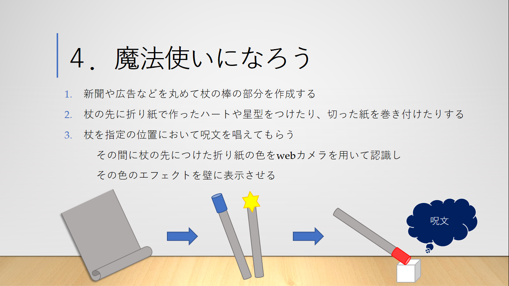
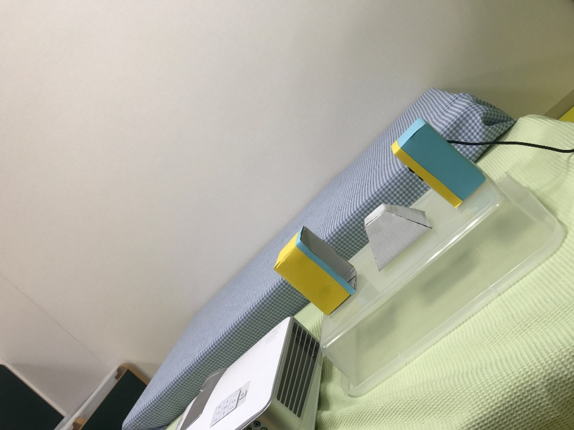
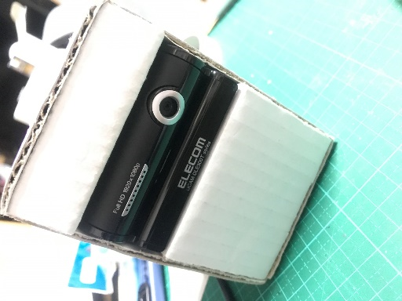

| 使用言語 | Processing |
| 制作時期 | 2017年8月 |
| 制作期間 | 3か月間 |
| 授業 | 2年ゼミ |
| 概要 | 未就学児を対象としたデジタル遊びコンテンツ |
| 新聞紙や色紙を使って自分専用の杖を作り，指定された場所に置いて呪文を唱えると | |
| プロジェクターから杖の色にあったエフェクトが表示される |
杖の色をWebカメラで読み取り，その数値と特徴が一番マッチしている色のエフェクトを表示させる
子供にWebカメラを意識させないよう，カメラの大きさに合わせた装置を段ボールで制作した．
カメラの装置と同じ見た目のものを対にして置くことで，
見た目のバランスと杖が置かれていない時の判定を行うようにした．


戻る